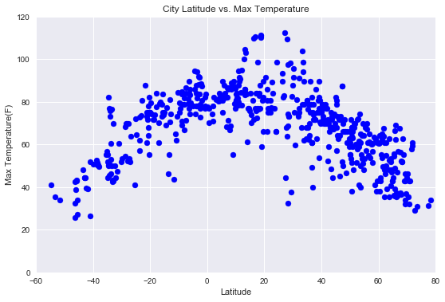

Summary: Latitude vs. X
The purpose of this project is to create a visualization dashboard website using visualizations we've learned in a past assignment. The information being shown is data pulled from the OpenWeatherMap API to assemble a dataset over 500 cities.


